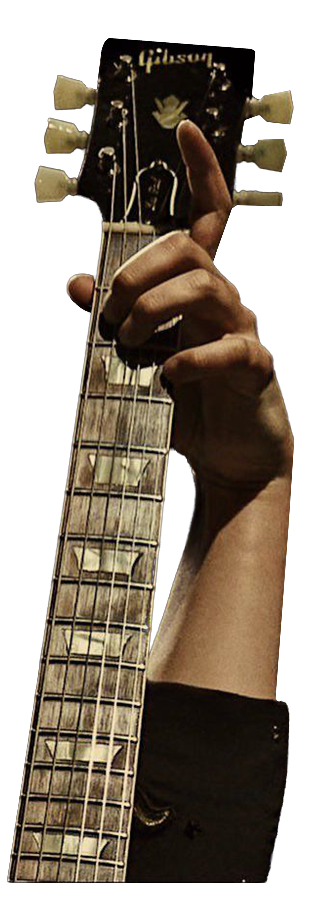
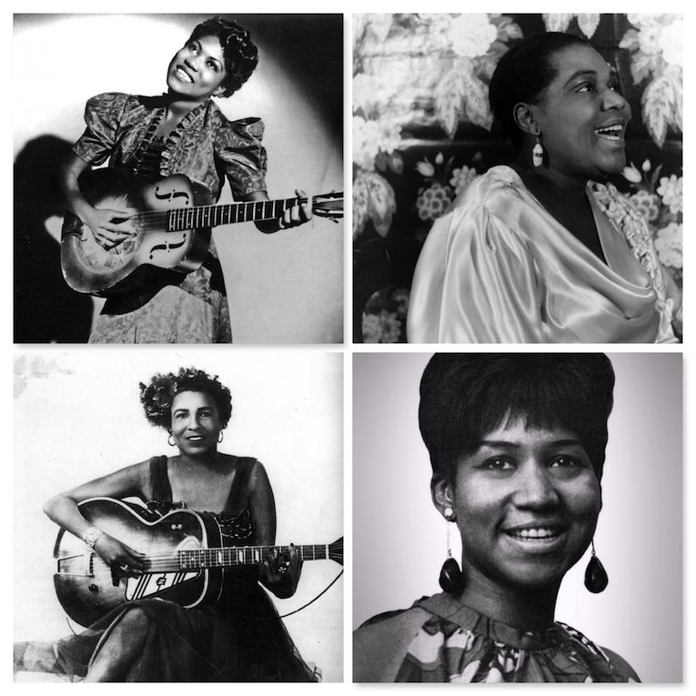
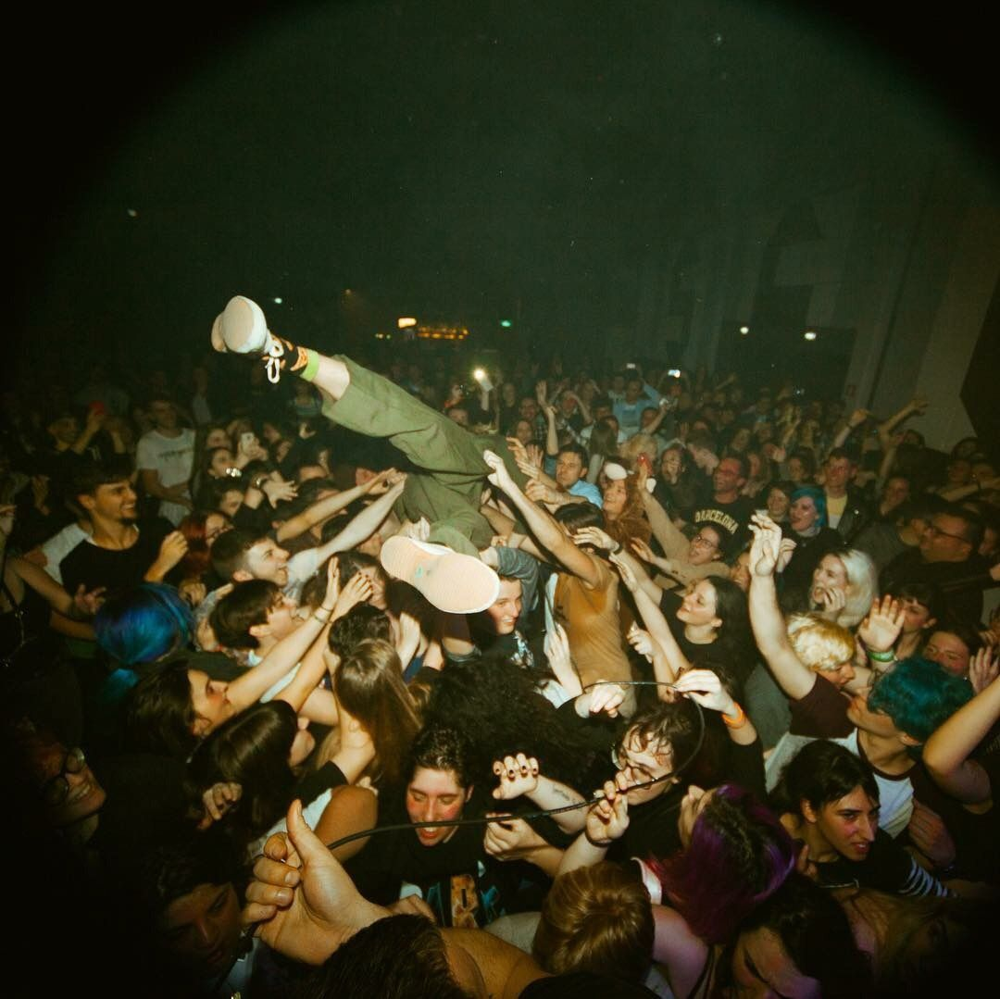
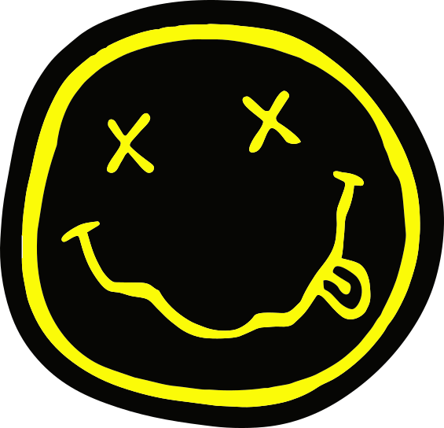
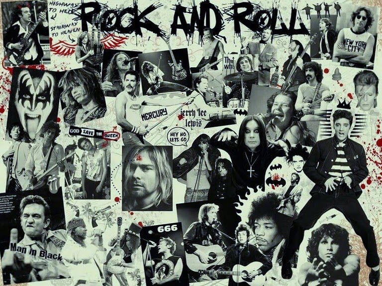

Menu



Timeline
Rock genres from the 1950s onwards
Hover over decade dates for music

In the early 1950s, the American popular music charts were dominated by the remnants of the big band era, including vocalists such as Doris Day, Frankie Laine, and Frank Sinatra. However, in the South, radio disc jockey Alan Freed begins his "Moondog Show," where he spins an up-tempo mixture of rhythm & blues hits, upbeat jazz combos, and western swing, gaining a wide audience of both white and black young people. Freed eventually names this crosscurrent of musical styles and influences "Rock and roll."
Rock & Roll's first #1 hit is Bill Haley and His Comets' single "Rock Around The Clock" made in 1955. It was teenagers who first picked up on this new rock sound, sparking this new phenomenon we see throughout many other music genres of music made for a younger audience rather than ‘parent music.'
With major record labels at this time being slow to pick up on the trends of Rock, independent labels such as Sun (Memphis), Ace (Jackson, MS), Vee-Jay (Gary, IN), Chess (Chicago) moved quickly to sign new Rock & roll artists, eventually leading the major labels to scramble, sending out scouts to find new talent. Scouts from major record label RCA, looking to sign their own rock and roll performer, buy out the contract of Memphis singer Elvis Presley from regional label Sun Records.
In April 1956 Elvis Presley tops the Pop Charts with his first RCA single release, "Heartbreak Hotel". By the end of the year Presley would be the first artist ever to have nine singles in the Hot 100 at one time.
Rock's influence spreads quickly, impacting radio, movies, TV, fashion, attitudes, and language worldwide. Initially dismissed as a fad, rock music proves its staying power and teen culture drives the music industry, from record and jukebox sales to radio airplay.

In the late sixties outdoor rock music festivals begin. First with 1967's Monterey Pop Festival which attracts 55,000 fans per day to a three day concert. In the summer of 1969 the Woodstock Music and Art Fair draws 500,000 people to a three day concert in Bethel, New York. Soon after the decade ends The Beatles break up, but their dominance of the sixties record charts is apparent with the band owning six of the Top 10 albums of the decade and 21 of the decades' top 100 singles.

Glam or Glitter Rock shines briefly in the first half of the seventies. Live albums are popular, with huge hits for Rare Earth, Peter Frampton, and Kiss. Reggae moves out of Jamaica to become a worldwide genre. Disco dominates the radio and dance floors in the late seventies. Punk rock, a throwback to sixties garage rock, emerges in the late seventies as a reaction to arena rock, progressive rock, and disco. Punk becomes New Wave as bands move beyond guitars and drums and begin incorporating synthesizers.
Nostalgia for rock's earlier days grows in the seventies. Compilation albums of various artists and musical styles are popular. The Nuggets album series, first released in 1972, explores largely forgotten or obscure garage and psychedelic bands. Oldies radio stations that focus on the late 50s to mid-60s are popular. In such a brief period, rock has gone from the catchy, soulful music of the blues/R&B to a much harsher, head-banging sound, and whether people liked it or not, this influence is carried on further into the next decade.

Heavy metal morphs into new subgenres such as rap metal or rapcore, nu metal, and industrial metal. Electronic music continues to change as well, with synthpop, techno, and house splitting into new styles including trance, drums & bass, trip-hop, and eurodance.
Pop and teen-pop continue to appeal to a younger radio audience, with the Backstreet Boys, *NSYNC, 98 Degrees, Hanson, and The Spice Girls having major success. Late in the decade, female teen pop artists ascend with major hits by Jennifer Lopez, Destiny's Child, Christina Aguilera, and Britney Spears. Contemporary R&B also scores big on the pop charts, especially for Whitney Houston, Mariah Carey, TLC, Toni Braxton, Lauryn Hill, and Boys II Men.
Post-grunge bands such as Five Finger Death Punch, Three Days Grace, Foo Fighters (some may argue different, but many classify as post-grunge, even for a 90s band!) were all the rage in the 2010s. Alternative sound tried to stick around for the first bit of this century; however, a wave of what you could call 'commercial rock’ started taking over the mainstream. This genre, otherwise known as pop-rock has rock sounds but for a wider audience as pop music really became on the rise. Some of these bands included Imagine Dragons, Twenty One Pilots, and Portugal. The Man and OneRepublic.
The irony in the change from grunge to more mass appeal in rock is there; however, after the tragic death of Nirvana's Kurt Cobain, grunge never seemed to get its footing once more. Moreover, there was a footing for a 'radio star’ with the rise in celebrity culture and labels' recognition of its profit, where does that leave rock as a whole today?
